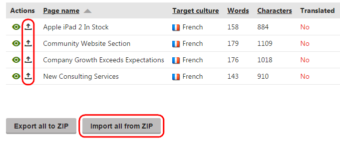

Importing completed human translations
To ease the waiting period involved in human translation, the system provides an import mechanism that checks the status of translations and retrieves the required data when it is ready. Most human translation services support automatic loading of completed translations.
The translation retrieval process consists of two parts:
Importing the translation data – The system loads the XLIFF data of the finished translation from the service and transfers it into the matching submission. This does not affect the website's content.
Note that the <trans-unit> elements in the imported XLIFF files need to contain the <target> child element with the translated text.
Processing the submission – The translated content is inserted into the actual pages. The process overwrites the appropriate language version of the pages that were submitted for translation.
Combining the steps
You can combine both steps of the translation retrieval process by enabling the automatic import of submissions:
Open the Settings application.
Navigate to Content -> Translation services.
In the General section, select the Automatically import translated submissions check box.
The system now automatically inserts translated content into pages when the data is imported.
Warning: This overwrites pages immediately when a service finishes the translations, without the approval of the content administrators.
Note that the setting does not apply to manual translations, i.e., you still need to import the translations yourself.
Kentico EMS required
Features described on this page require the Kentico EMS license.
Importing translated submissions
To import the content of translated submissions:
Open the Translations application.
All untranslated submissions are in the Waiting for translation status.
Click Update statuses above the list of submissions.
This imports all completed translations and switches the corresponding submissions to the Translation ready status.
You can automate the translation status updates by enabling and configuring the Translation retrieval scheduled task for your site. With this task running, the system regularly updates all translation submissions according to a predefined time interval.
Click Process translations (
 ) for submissions that are in the Translation ready status.
) for submissions that are in the Translation ready status.
The system transfers the translated content into the corresponding pages and changes the submission status to Translation imported.
Manually uploading translation data
The system allows you to directly upload the XLIFF translation data into submissions. You can use this approach if you encounter any problems with the translation retrieval, or if your service does not support automatic loading of finished translations.
Edit ( ) the given translation submission in the Translations application.
Load the translated data into the submission. You have two options:
To upload an .xlf file containing the translated data of a specific page, click Upload translated XLIFF file ( ) next to the matching item in the list of submitted pages.
If you have the completed translation for the entire submission in a zip archive, upload it by clicking Import all from ZIP.

If the upload is successful, the submission switches to the Translation ready status. You can then process the submission to transfer the translated content into the website's pages.